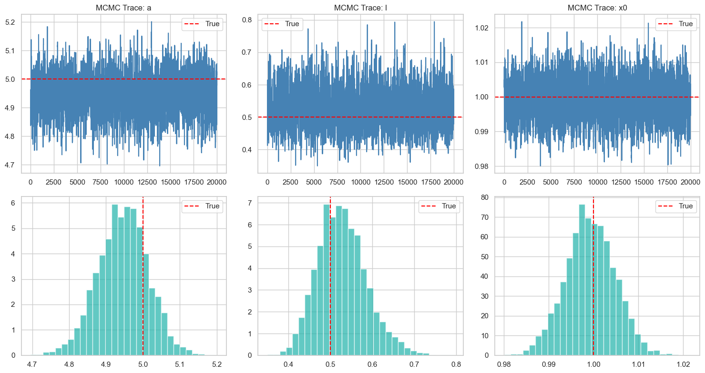
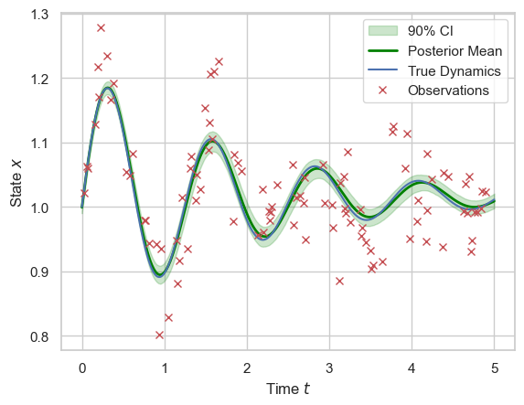
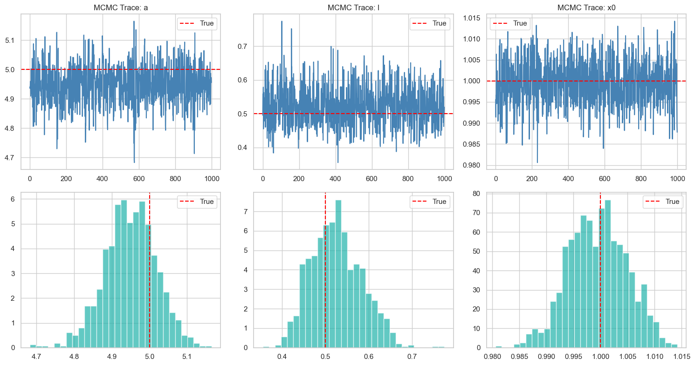

We do Bayesian data assimilation for a deterministic ODE model using its noisy observations. The Python codes used are here.
Model and Observations
The ODE of interest is defined as:
\[ \frac{dx}{dt} = \exp(-l t) \cos(\alpha t) \]
where \(l\) and \(\alpha\) are unknown parameters to be inferred. The system is numerically integrated using the Euler method with an initial condition \(x(0) = x_0\) over the time interval \([0, 5]\) with time step \(\Delta t = 0.01\).
A synthetic trajectory is generated using the true parameter values: \(\alpha = 5, l = 0.5, x_0 = 1.0\). Noisy observations are sampled at 100 randomly chosen time points \(\{t_i\}_{i=1}^{100}\) following:
\[ y_i = x(t_i) + \epsilon_i, \quad \epsilon_i \sim \mathcal{N}(0, \sigma^2) \]
with observation noise standard deviation \(\sigma = 0.05\). The dynamics and observations are shown in Figure below.

Bayesian Inference Setup
We assume the observation noise standard deviation is known, and wish to conduct Bayesian inference on the ODE hyperparameters and initial condition \(\theta = (\alpha, l, x_0)\). We set a flat prior for all the parameters. The (unnormalised) posterior distribution of the parameters of interest \(\theta\) is thus given by the likelihood.
Since we assume the dynamics are deterministic, all the stochasticities are captured in the observation noise. Here, the log-likelihood function is constructed by simulating the system forward (via Euler’s method with stepsize $0.01$) using candidate parameters and comparing the predicted states to observations, thus:
\[ \log L(\theta) = \log p(y \mid \theta) = \sum_{i=1}^{N} \log \phi\left( \frac{y_i - x_\theta(t_i)}{\sigma}\right) \]
where \(x_\theta(t_i)\) denotes the simulated trajectory’s value at time \(t_i\) under parameters \(\theta\) and \(\phi\) is the density function of a standard normal distribution.
MCMC Results
We run MCMC on the constructed posterior using Python’s BlackJax package (Cabezas et al. 2024). I first consider a random walk Metropolis. After trying to hand-tune the stepsize (for each parameter) and getting frustrated, I used an adaptive version of RWM with Robbins-Monro adaptation (Andrieu and Thoms 2008) targeting the optimal acceptance rate (around 0.3, given the low posterior dimension (Roberts and Rosenthal 2001)).

I initialise the chain at \((\alpha, l, x_0) = (4,1,0.5)\) so they are moderately close to the truth, yet some good MCMC movement is needed. For the chain, I first run 20,000 steps with adaptation as burn-in and warm-up, then use the learned stepsize to run another 20,000 steps without adaptation to obtain samples from the posterior. The resulting trajectories (burn-in removed) are shown in Figure above. The assimilated dynamics with 90% credible interval are shown below, and the result looks great. The assimilated dynamic trajectories are simulated using 1000 sets of parameter values, bootstrapped from the joint posterior samples, which are then averaged and quantiled to produce the mean and credible interval.

NUTS
I initially tried NUTS but it did not work. Somehow, I tried it again, with the help of Thomas Newman, and it worked! For 1000 steps of warmup and 1000 further steps, we have the following results, which is visually indistinguishable from that of the RWM – seems like it works correctly too.
